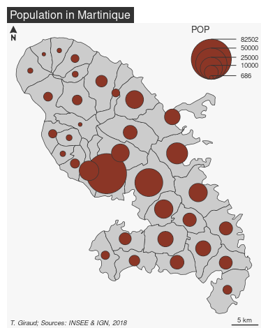

Create and integrate thematic maps in your R workflow. This package helps to design various cartographic representations such as proportional symbols, choropleth or typology maps. It also offers several functions to display layout elements that improve the graphic presentation of maps (e.g. scale bar, north arrow, title, labels). mapsf maps sf objects on base graphics.
Installation
You can install the released version of mapsf from CRAN with:
install.packages("mapsf")Alternatively, you can install the development version of mapsf from GitHub (dev branch) with:
remotes::install_github("riatelab/mapsf", ref = "dev")Usage
This is a basic example which shows how to create a map with mapsf.
The main mapsf function is mf_map().
library(mapsf)
# Import the sample dataset
mtq <- mf_get_mtq()
# Plot the base map
mf_map(x = mtq)
# Plot proportional symbols
mf_map(x = mtq, var = "POP", type = "prop", leg_pos = "topright")
# Plot a map layout
mf_layout(
title = "Population in Martinique",
credits = "T. Giraud; Sources: INSEE & IGN, 2018"
)
A more detailed example:
# Export a map with a theme and extra margins
mf_theme("green")
mf_export(
x = mtq, filename = "mtq.png",
width = 600, res = 120,
expandBB = c(0, 0, 0, .3)
)
# Plot a shadow
mf_shadow(mtq, col = "grey10", add = TRUE)
# Plot a choropleth map
mf_map(
x = mtq, var = "MED", type = "choro",
pal = "Dark Mint",
breaks = "quantile",
nbreaks = 6,
leg_title = "Median Income\n(euros)",
leg_val_rnd = -2,
add = TRUE
)
# Start an inset map
mf_inset_on(x = "worldmap", pos = "right")
# Plot mtq position on a worldmap
mf_worldmap(mtq, col = "#0E3F5C")
# Close the inset
mf_inset_off()
# Plot a title
mf_title("Wealth in Martinique, 2015")
# Plot credits
mf_credits("T. Giraud\nSources: INSEE & IGN, 2018")
# Plot a scale bar
mf_scale(size = 5)
# Plot a north arrow
mf_arrow("topleft")
dev.off()


Background
mapsf is the successor of cartography. There are no plans for new features or enhancements in cartography, but basic maintenance and support will continue indefinitely. Existing projects that use cartography can safely continue to use cartography. New projects should use mapsf because it is friendlier, lighter and more robust.
See mapsf vignette to migrate from cartography to mapsf.
Alternatives
-
cartography (superseded by
mapsf) -
tmap
- ggplot2 + ggspatial
Community Guidelines
One can contribute to the package through pull requests and report issues or ask questions here. See the CONTRIBUTING.md file for detailed instructions on how to contribute.
This project uses conventional commits and semantic versioning.